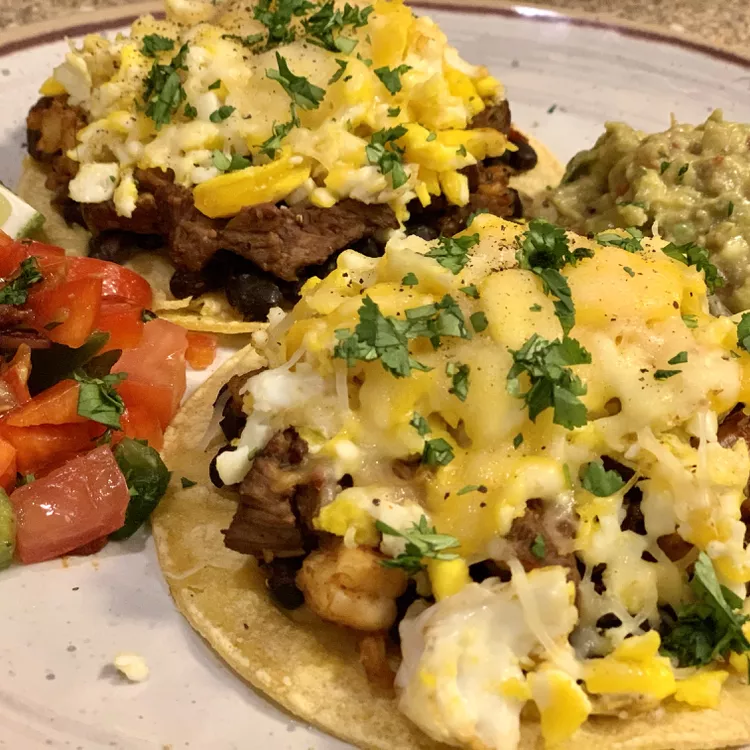

Huevos Rancheros

Description
Prepare your senses for a culinary journey to the heart of Mexico with huevos rancheros a dish as vibrant and bold as the culture from which it hails. Imagine a sunny-side-up egg, its golden yolk nestled atop a warm corn tortilla, cradled in a symphony of flavors that dance upon your palate. As you take your first bite, the rich, smoky notes of charred tomatoes and fiery jalapeños mingle with the earthy warmth of black beans, while the tangy brightness of fresh salsa verde adds a refreshing zing. Each forkful is a celebration of contrasts: the crisp bite of the tortilla against the creamy richness of the egg, the heat of the spices tempered by the cool creaminess of avocado slices. With every mouthful, you're transported to a bustling mercado, where the aromas of freshly ground spices and sizzling comals fill the air, and the flavors of tradition and heritage come together in perfect harmony. Huevos rancheros: a true fiesta for the senses, guaranteed to leave you craving more. ¡Buen provecho!
Ingredients
- 8 corn tostada shells
- 1 (16 ounce) can refried beans
- 2 cups shredded Cheddar cheese, divided
- 1 (7 ounce) can chipotle peppers in adobo sauce
- ½ (8 ounce) jar salsa
- 2 cups chopped fresh cilantro, divided
- 1 (15 ounce) can black beans, drained
- 1 tablespoon butter, or as needed
- 8 eggs
Directions
- Preheat an oven to 500 degrees F (260 degrees C).
- Arrange tostada shells on a baking sheet. Spread a layer of refried beans onto each shell; sprinkle each shell with about 1 tablespoon Cheddar cheese.
- Combine chipotle peppers in adobo sauce, salsa, and 1 cup cilantro in a saucepan over medium heat; cook and stir until warm, about 5 minutes.
- Put black beans in a microwave-safe bowl; heat in microwave until warm, about 1 minute.
- Heat butter in a skillet over medium heat; cook each egg in the melted butter until white is firm and yolk is still together, 2 to 3 minutes. Carefully place each cooked egg atop a tostada shell; sprinkle with remaining Cheddar cheese.
- Bake tostadas in the preheated oven until cheese is melted, about 10 minutes.
- Place each tostada on a plate; top with salsa mixture and cilantro. Spoon black beans on the side.
Home